CentralQ Chat White Paper¶
The Need for CentralQ Chat¶
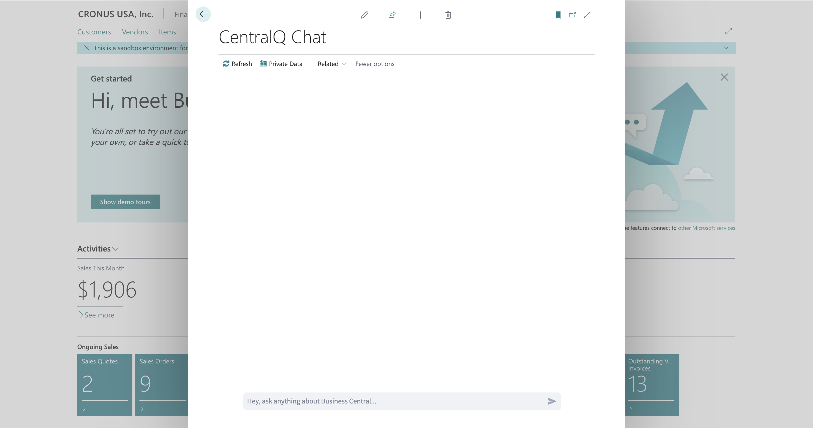
Challenges with Business Central¶
Microsoft Dynamics 365 Business Central is a powerful tool for business management, but its extensive range of features can sometimes be overwhelming, especially for new users or those unfamiliar with certain aspects of the system. Some of the common challenges faced by Business Central users include:
- Complex Navigation: With its comprehensive functionalities, navigating through Business Central to find specific features or information can be daunting.
- Overwhelming Information: The sheer volume of documentation available online and offline can be time-consuming and confusing to sift through.
- Keeping Up-to-Date: Business Central is frequently updated, making it a challenge to stay current with the latest features and best practices.
- Extracting Business Insights: Traditional reporting and data analysis can be complex and time-consuming, requiring specialized skills or separate BI tools to derive meaningful insights from Business Central data.
These challenges can lead to inefficiencies and frustrations, impacting productivity and the user experience.
Purpose of CentralQ Chat¶
CentralQ Chat is designed to bridge the gap between the complexity of Business Central and the user's need for quick, accurate information and actionable insights. It empowers users to:
- Chat about how Business Central works.
- Chat with your data to get insights.
- Just ask... to simplify your Business Central experience.
In essence, CentralQ Chat helps organizations maximize their Business Central investment by making information accessible and data actionable.
Key Features of CentralQ Chat¶
1. AI-Driven Assistance¶
CentralQ Chat revolutionizes how users interact with Business Central through its AI-driven assistance. This advanced system is designed to provide not just instant responses, but ones that are accurately tailored to the user's specific query. Leveraging the latest in artificial intelligence technology, CentralQ Chat interprets questions, searches through various data sources, and delivers precise answers, simplifying the complexity of Business Central.
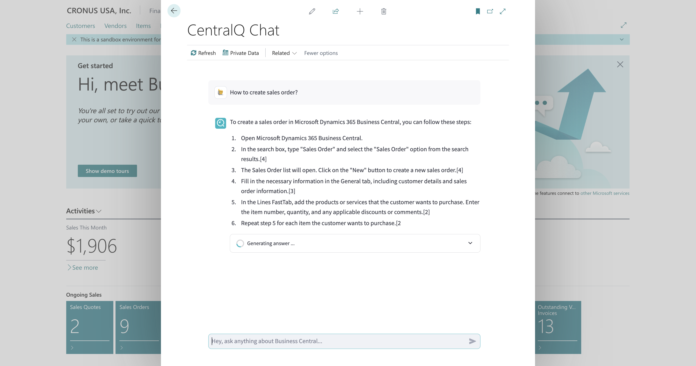
2. Comprehensive Knowledge Base¶
CentralQ Chat's strength lies in its diverse and extensive knowledge base, which includes:
-
Private Documents: Users can upload their own guides, manuals, documentation and even page scripts. This feature personalizes the AI's responses, making them more relevant to the user's specific Business Central setup.
-
Microsoft Learn Integration: Access to Microsoft's official, up-to-date documentation ensures that users receive reliable and current information directly from the source.
- Community Knowledge: A wealth of insights is available from community-generated content, including expert blogs, instructional videos, tweets, and authoritative books, providing a broader perspective on various topics.
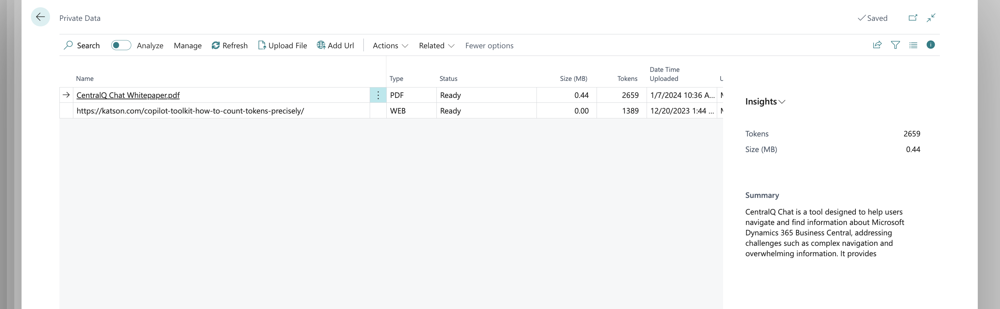
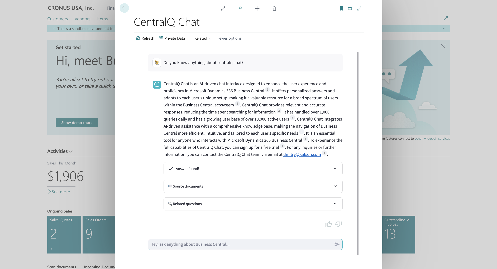
New Feature
CentralQ Chat now supports importing page scripting directly from YAML files or through links, enhancing the chat's responsiveness with dynamically generated user manuals. This integration allows for seamless updates to the knowledgebase, ensuring that the chat responses remain relevant and contextually accurate.
Importing Page Scripting¶
CentralQ Chat now supports importing page scripting directly from YAML files or through links, enhancing the chat's responsiveness with dynamically generated user manuals. This integration allows for seamless updates to the knowledgebase, ensuring that the chat responses remain relevant and contextually accurate.
Features and Benefits¶
- Automated User Manual Generation: Automatically generates detailed user manuals in the current language setting of Business Central, immediately integrating them into the CentralQ knowledgebase.
- Direct Interaction Through Chat: Each chat response linked to these manuals includes an actionable URL that users can interact with, directly executing relevant page scripting workflows.
- Edit and Export Options: Users can now edit manuals directly within CentralQ Chat and export them in various formats like Word or YAML, providing flexibility in how the information is used and shared.
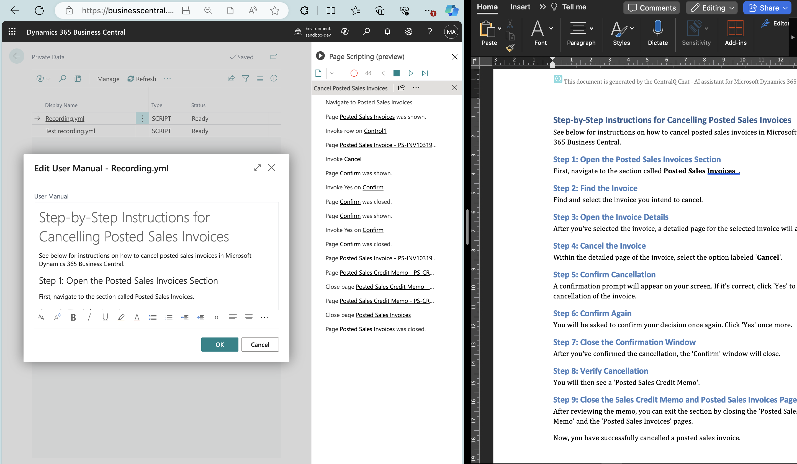
How It Works¶
- Upload a Script: Users can upload a YAML file or paste a link to a scripting page.
- Automated Processing: CentralQ Chat processes the file or link, generating a user manual that is immediately available for use within the chat.
- Interactive Use: Users can query the chat about specific scripting actions, and CentralQ Chat will provide responses with direct links to the scripts for live interaction.
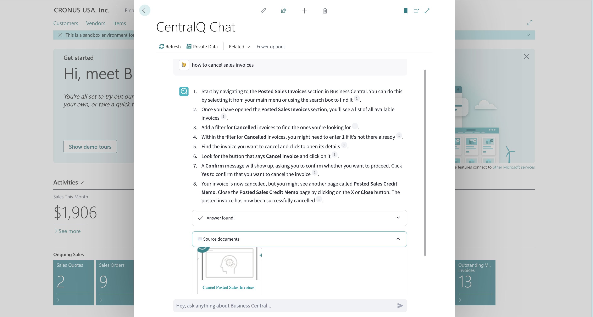
This feature significantly streamlines how users interact with Business Central, making complex workflows accessible and manageable through simple chat commands.
3. Data Insights Agent¶
The Data Insights Agent transforms how users interact with their Business Central data. This feature enables natural language data analysis directly within the chat interface, allowing users to ask business questions and receive instant visual insights.
New Feature
The Data Insights Agent allows users to analyze their Business Central data using natural language queries. Ask questions about sales, inventory, financials, and more to receive both textual summaries and visual charts based on your live data.
Key Capabilities¶
- Natural Language Data Queries: Ask questions in plain English about your business data
- Visual Insights: Receive charts and graphs that help identify trends and patterns
- Business Intelligence: Get insights about sales performance, customer behavior, inventory levels, and financial metrics
- Secure Analysis: All queries respect existing Business Central user permissions
- Transparent Process: View the analysis process through an expandable "Thoughts" section
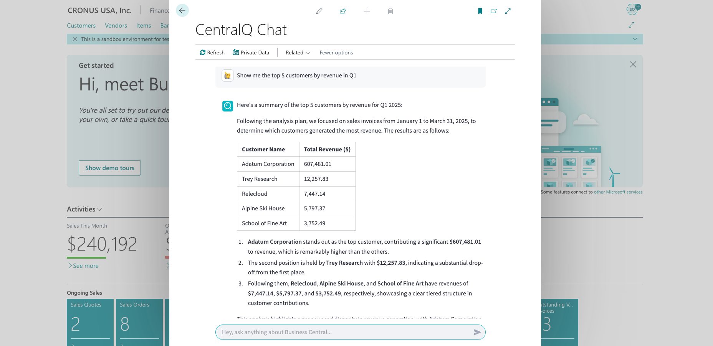
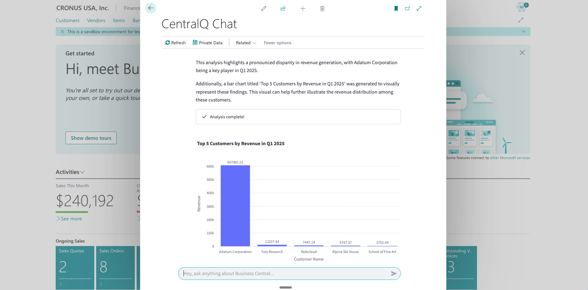
How It Works¶
The Data Insights Agent follows a sophisticated process: 1. Identifies data-related questions 2. Generates Python code to query Business Central APIs 3. Executes the code in a secure, isolated environment 4. Processes the data and creates visualizations 5. Returns natural language answers with visual elements
This feature empowers users to make data-driven decisions without requiring specialized technical skills or complex reporting tools.
4. Interactive and Transparent Responses¶
Interaction with CentralQ Chat goes beyond receiving answers. Users can delve deeper into topics, ask follow-up questions, and explore related areas, all through a conversational interface. Every response from CentralQ Chat includes citations from relevant sources, adding a layer of transparency and credibility to the information provided.

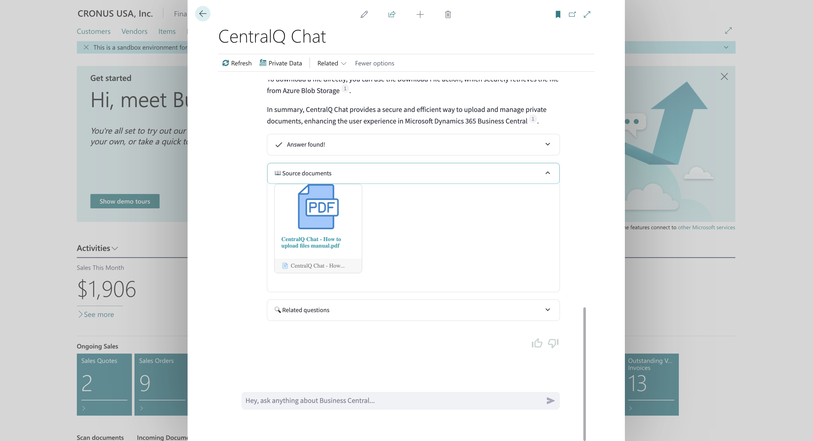
or for Data Insights: 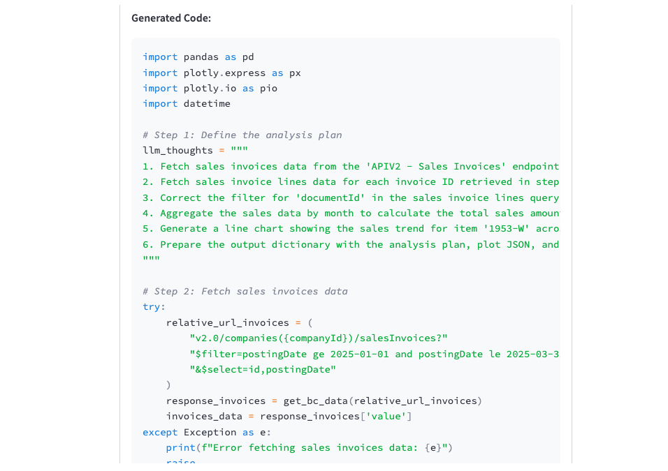
5. Multilingual Support¶
While CentralQ Chat is optimized for English, offering its best performance in this language, it also supports queries in other languages. This feature makes CentralQ Chat accessible to a wider audience, although users should note that the accuracy of responses in languages other than English may vary. Generated from page scripting, user manuals are available in the current language setting of Business Central, ensuring that users receive information in a language they are comfortable with.
6. Customizable User Experience¶
One of the most notable aspects of CentralQ Chat is its adaptability to user preferences. Users are in control of their experience, deciding whether to use just private documentation, official documentation from Microsoft Learn, community resources, or a combination of these sources. This feature ensures that the AI's responses are aligned with the user's specific informational needs and preferences.
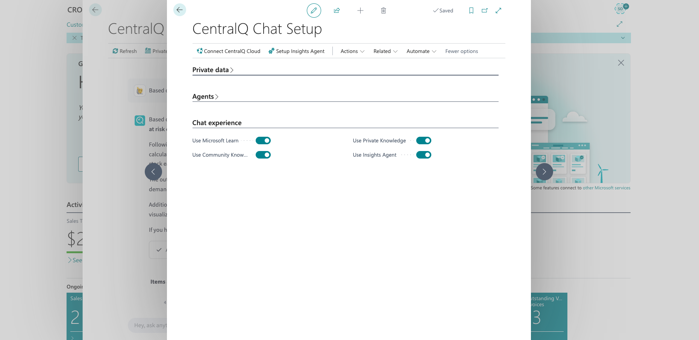
How CentralQ Chat Works¶
CentralQ Chat transforms the way users interact with Microsoft Dynamics 365 Business Central by integrating advanced AI technology and user-centric design. Here's an overview of how it operates:
User Workflow¶
The workflow in CentralQ Chat is straightforward yet powerful:
- Upload Documents (for guidance queries): Users can start by uploading their Business Central-related documents. This could include guides, manuals, or any relevant material that they want the AI to use for providing personalized answers for guidance.
- Ask Questions: Through an intuitive chat interface, users can ask:
- Operational questions about Business Central for guidance.
- Business questions about their data (e.g., "What were my total sales last month?") to the Data Insights Agent.
- Receive AI-Generated Responses:
- For guidance queries, CentralQ Chat employs advanced AI algorithms to analyze the query, search through the available knowledge base (private documents, Microsoft Learn, Community Knowledge), and generate accurate, context-relevant answers.
- For data queries, the Data Insights Agent processes the request, queries your live Business Central data, and returns answers often accompanied by visualizations.
For more detailes on usage, visit our getting started page and the Data Insights Agent Getting Started page.
Behind the Scenes¶
CentralQ Chat's efficacy lies in its sophisticated backend processes:
- AI Models and Technology: At its core, CentralQ Chat utilizes cutting-edge AI models, including
gpt-4oandgpt-4o-mini(orchestrated based on the request), to understand user queries and generate responses. - Ranking Mechanism (for guidance queries): To source information for guidance, CentralQ Chat applies a smart ranking system. This system prioritizes sources based on user settings – private documents are usually given the highest priority, followed by Microsoft Learn and Community Knowledge. The AI then combines insights from these sources to provide the most comprehensive answer possible.
- Data Insights Agent Processing: When a data-related question is posed:
- The agent interprets the natural language query.
- It generates Python code to interact with relevant Business Central APIs.
- This code is executed in a secure, isolated environment to fetch the necessary data.
- The retrieved data is then processed, and visualizations are often created.
- Finally, a natural language response, along with any charts or graphs, is presented to the user.
- Users can inspect the agent's methodology via the "Thoughts" section. For more technical details, see How the Data Insights Agent Works.
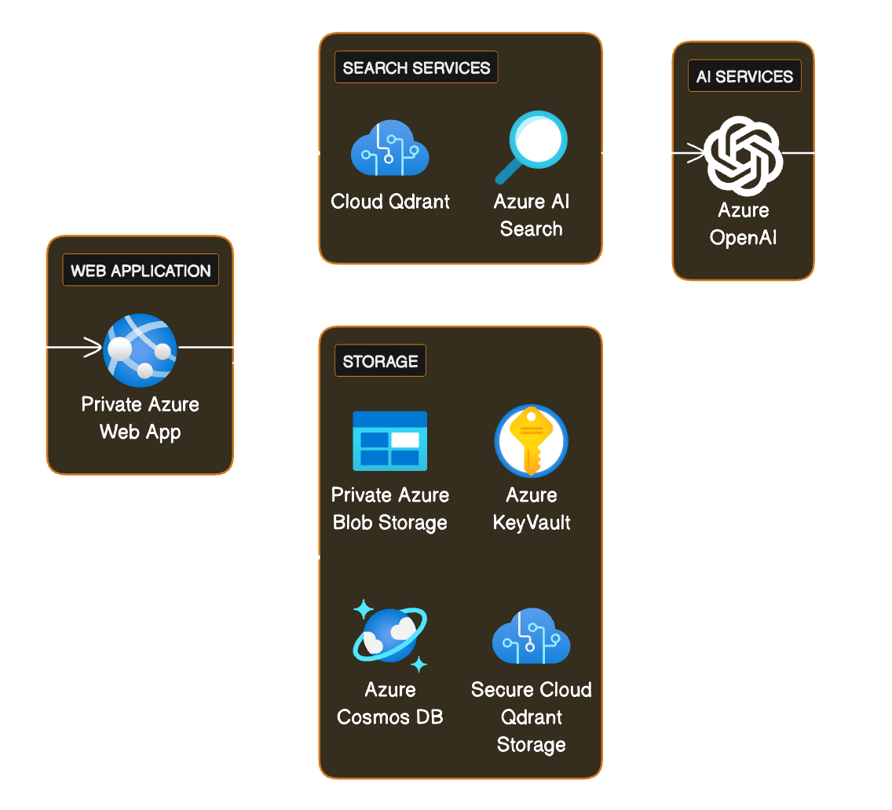
Chat Interface¶
CentralQ Chat's interface is designed for ease of use and efficiency:
- User-Friendly Design: The chat interface is clean, intuitive, and easy to navigate, ensuring users of all technical backgrounds can interact with it without difficulty.
- Interactive Features: Users can engage in a dynamic conversation with the AI, ask follow-up questions, and receive in-depth information. This interactive nature allows for a more engaging and productive user experience.
Through a combination of user-friendly design, sophisticated AI technology, and a comprehensive knowledge base, CentralQ Chat provides an unparalleled tool for enhancing the Business Central experience.
Pricing and Plans¶
CentralQ Chat offers a straightforward and value-driven pricing model tailored to meet the needs of businesses of all sizes using Microsoft Dynamics 365 Business Central. Understanding the cost and associated benefits is crucial for potential users to make informed decisions.
CentralQ Chat Pro¶
- Monthly Subscription: CentralQ Chat is priced at $20 per user per month, making it an affordable addition to any Business Central environment.
- Annual Subscription: For those seeking a longer commitment, an annual subscription is available at $200 per user per year, offering substantial savings for yearly subscribers.
- Inclusive Features: The paid plan includes full access to all features of CentralQ Chat, including AI-driven assistance, integration with Microsoft Learn, Community Knowledge access, the ability to upload and use private documents, page scripting integration, and the Data Insights Agent for business data analysis. This comprehensive access ensures users have all the tools they need for an enhanced Business Central experience.
- Private Data Limits: Users can upload up to 100 MB of private documents monthly, equivalent to approximately 1000 pdf pages, providing ample capacity for most businesses' needs.
- Request Limits: Each user under the paid plan can make up to 500 requests per month, ensuring frequent and consistent access to the AI-driven insights.
Free Trial Period¶
- Duration: CentralQ Chat offers a 30-day free trial, allowing potential users to experience the full range of features and benefits without any upfront commitment.
- Trial Limitations: No limitations are imposed during the trial period, ensuring that users can explore the app's capabilities without any restrictions.
Security and Privacy¶
CentralQ Chat places a high priority on the security and privacy of its users' data, particularly in terms of how files and private data are stored and accessed. Understanding these measures is essential for users to trust and rely on the application for their sensitive business operations.
Secure File Storage and Controlled Access¶
- Private Azure Blob Storage: Files uploaded to CentralQ Chat are securely stored in private Azure Blob Storage. This secure storage method ensures that user files are not publicly accessible and can only be retrieved through secure, authenticated methods.
- Controlled File Access: CentralQ Chat employs stringent controls for file access. Users can download their files directly from the Private Data page within CentralQ Chat or through temporary, time-limited links provided in chat responses. These temporary links are valid for only 15 minutes, significantly reducing the risk of unauthorized access or sharing.
Data Privacy and Ethical Use¶
- Private Data Handling: CentralQ Chat treats private data with the utmost respect. User-uploaded documents and web content are exclusively used to enhance the chat experience and are not utilized for AI model training or any other purposes that could compromise user privacy.
- Telemetry and Chat Data: While CentralQ Chat does collect telemetry data, including chat interactions, this information is used solely for analytical purposes to improve the app's functionality. It is never used for AI model training, ensuring that user interactions remain confidential and are utilized in a manner that respects user privacy.
Ensuring Comprehensive Data Security¶
- Cloud Qdrant for Content Storage: User content, such as files and web page data, is securely stored in a cloud Qdrant database. This method links the content specifically to the user's unique chat ID, ensuring that the data is isolated and accessible only within that particular user's environment.
- Azure Keyvault for Sensitive Information: CentralQ Chat leverages Azure Keyvault to store sensitive information like chat IDs and keys. This approach guarantees that access to this critical data is restricted to authorized personnel and systems, enhancing overall data security.
Commitment to User Privacy¶
CentralQ Chat is committed to upholding the highest standards of data privacy and security. This commitment is evident in the app's architecture, which is designed to protect user data, and in its operational policies, which prioritize user privacy in every aspect of the app's functionality. With CentralQ Chat, users can be confident that their data is secure and their privacy is respected, making it a trustworthy tool for managing Business Central information.
Benefits and Impact¶
CentralQ.ai - free and public version of CentralQ Chat, has made a significant impact in the world of Microsoft Dynamics 365 Business Central, revolutionizing how users interact with and understand Business Central.
- Daily Interactions: CentralQ handles over 1,000 queries every day, providing timely and relevant answers to a wide array of Business Central-related questions.
- Growing User Base: With over 10,000 active users, CentralQ Chat has established a strong presence among Business Central users. This growing community reflects the app's effectiveness and user satisfaction.
- Substantial Answer Database: To date, CentralQ Chat has delivered more than 100,000 answers, which is x3 times more than the official Business Central forum during the 2023 year, demonstrating its capacity to handle a high volume of queries with consistency and reliability.
Target Audience¶
CentralQ Chat is ideal for a broad spectrum of users within the Business Central ecosystem, ranging from new users seeking to understand the basics of Business Central to seasoned professionals looking for advanced operational insights. It serves as a valuable resource for:
- Business Central Administrators: Who need quick answers for system management and troubleshooting.
- End Users: Such as accountants, project managers, and sales personnel who regularly interact with Business Central for various operational tasks.
- Business Decision Makers: Looking for strategic insights and efficiencies within Business Central to improve business processes.
- IT Professionals and Consultants: Who assist businesses in implementing and customizing Business Central.
In essence, CentralQ Chat is not just a tool but a companion for anyone who interacts with Microsoft Dynamics 365 Business Central, ensuring that they can make the most out of this powerful business management solution.
Conclusion¶
CentralQ Chat represents a leap forward in the way users interact with Microsoft Dynamics 365 Business Central. By integrating AI-driven assistance with a comprehensive knowledge base, CentralQ Chat transforms the experience of navigating Business Central, making it more efficient, intuitive, and tailored to each unique business environment.
The Core Value Proposition¶
- Efficiency and Accuracy: CentralQ Chat significantly reduces the time spent searching for information, providing precise answers instantly.
- Customized Knowledge Base: With the ability to integrate private documents, official Microsoft Learn resources, and extensive community knowledge, CentralQ Chat offers a personalized experience that aligns with each user's specific Business Central setup.
- Data-Driven Insights: The Data Insights Agent allows users to analyze their Business Central data through natural language queries, making complex data analysis accessible to everyone.
- Interactive and User-friendly: The AI-driven chat interface is not just a tool for answers but also a platform for learning and exploration, enhancing user understanding and proficiency in Business Central.
- Security and Privacy: CentralQ Chat upholds the highest standards of data security and privacy, ensuring that user data is protected and utilized solely for enhancing the chat experience.
Transform Your Business Central Experience¶
CentralQ Chat is more than just a chatbot; it's an essential tool for any user of Microsoft Dynamics 365 Business Central. Whether you're looking to streamline your operations, enhance your understanding of Business Central, or just need a reliable source for quick answers, CentralQ Chat is your go-to solution.
Take the First Step: Experience the full capabilities of CentralQ Chat by signing up for a free trial. For any inquiries or further information, feel free to contact us. Embrace the future of Business Central navigation with CentralQ Chat today!
Contact Information¶
For any questions or information about CentralQ Chat, please feel free to email to dmitry@katson.com